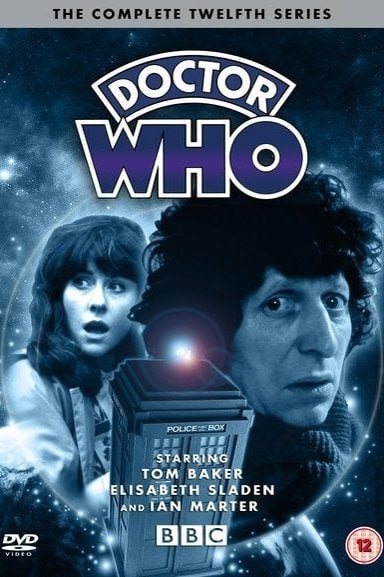
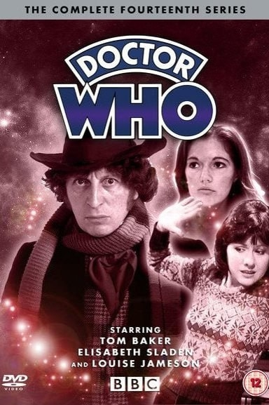
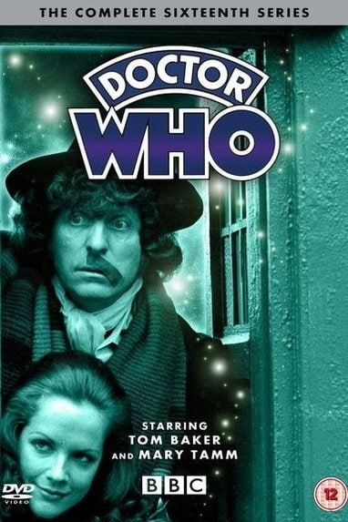
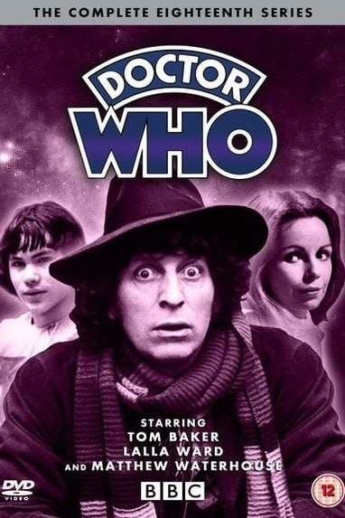

Таблица коллекции |  Навигация по канону |  Связные экранизации |


Новая эра (Ньюскул) с 2005 по 2022:


Перезапуск (Whoniverse) с 2023:


----

Эра Четвертого Доктора
Актёр: Том Бейкер
Первое появление в:
- (1974) 11 сезон, 5 серия: Планета пауков (небольшое появление)
Доктор Кто (Классика) - 12 сезон (1974-1975)



Четвёртый Доктор, Сара Джейн и Гарри Салливан сталкиваются с гигантским роботом, сонтаранцами, киберлюдьми; кульминация — «Происхождение далеков» с Давросом: Доктор стоит перед выбором, уничтожить ли расу далеков в зародыше. Сезон задаёт масштаб новой эры — и моральные границы путешествий во времени.
2. Ковчег в космосе (The Ark in Space) - 4 эпизода
3. Эксперимент сонтаранца (The Sontaran Experiment) - 2 эпизода
4. Происхождение далеков (Genesis of the Daleks) - 6 эпизодов
5. Месть киберлюдей (Revenge of the Cybermen) - 4 эпизода
Варианты озвучек, подробности выхода и другие ссылки на просмотр в описаниях серийНаш плейлист сезона в ВК
Таблица сезонов и озвучек
Доктор Кто (Классика) - 13 сезон (1975-1976)


Четвёртый Доктор и Сара Джейн сталкиваются с зайгонами, Сутехом, андроидами и Морбиусом; сезон выдержан в готической, почти хоррор‑эстетике, а «Мозг Морбиуса» ставит под сомнение саму природу Доктора — и расширяет мифологию сериала.
2. Планета зла (Planet of Evil) - 4 эпизода
3. Пирамиды Марса (Pyramids of Mars) - 4 эпизода
4. Вторжение андроидов (The Android Invasion) - 4 эпизода
5. Мозг Морбиуса (The Brain of Morbius) - 4 эпизода
6. Семена погибели (The Seeds of Doom) - 6 эпизодов
Варианты озвучек, подробности выхода и другие ссылки на просмотр в описаниях серий
Доктор Кто (Классика) - 14 сезон (1976-1977)



Четвёртый Доктор и Сара Джейн сталкиваются с разумной энергией Мандрагоры, Мастером и древними тайнами; кульминация — «Беспощадный убийца», где Доктор оказывается на суде Повелителей Времени. Сезон знаменует прощание с Сарой Джейн и усиливает тему ответственности Доктора за каждое вмешательство.
2. Рука страха (The Hand of Fear) - 4 эпизода
3. Беспощадный убийца (The Deadly Assassin) - 4 эпизода
4. Лицо зла (The Face of Evil) - 4 эпизода
5. Роботы смерти (The Robots of Death) - 4 эпизода
6. Когти Венг-Чанга (The Talons of Weng-Chiang) - 6 эпизодов
Варианты озвучек, подробности выхода и другие ссылки на просмотр в описаниях серий
Доктор Кто (Классика) - 15 сезон (1977-1978)


Четвёртый Доктор и Лила сталкиваются с Фендалом, космическим вирусом и угнетённой цивилизацией; появляется K‑9. Сезон смешивает научную фантастику с мистикой, а финал («Временное вторжение») раскрывает масштаб интриг Повелителей Времени — и цену их вмешательства в судьбы галактик.
2. Невидимый враг (The Invisible Enemy) - 4 эпизода
3. Образ Фендала (Image of the Fendahl) - 4 эпизода
4. Создатели солнц (The Sun Makers) - 4 эпизода
5. Подземный мир (Underworld) - 4 эпизода
6. Временное вторжение (The Invasion of Time) - 6 эпизодов
Варианты озвучек, подробности выхода и другие ссылки на просмотр в описаниях серий
Доктор Кто (Классика) - 16 сезон (1978-1979) Ключ времени


Четвёртый Доктор и новая спутница Романа (плюс K‑9) по поручению Белого Стража собирают шесть фрагментов Ключа Времени — артефакта, удерживающего равновесие вселенной. На пути — Рибос, пираты, друиды, андроиды и гигантский кальмар Кролл; в финале Чёрный Страж пытается завладеть Ключом, но Доктор срывает его планы. Сезон превращает «Доктора Кто» в квест‑арку с единой линией — и задаёт новый масштаб историй.
╠2. Планета-пират (The Pirate Planet) - 4 эпизода
╠3. Камни крови (The Stones of Blood) - 4 эпизода
╠4. Андроиды Тары (The Androids of Tara) - 4 эпизода
╠5. Сила Кролла (The Power of Kroll) - 4 эпизода
╚6. Фактор Армагеддона (The Armageddon Factor) - 6 эпизодов
Варианты озвучек, подробности выхода и другие ссылки на просмотр в описаниях серий
Доктор Кто (Классика) - 17 сезон (1979-1980)


Четвёртый Доктор и Романа (плюс K‑9) сталкиваются с далеками и Давросом, попадают в изысканную интригу в Париже, исследуют планету Хлорис и сражаются с Наймоном. Сезон балансирует между масштабной фантастикой и тонкой сатирой, а незавершённая «Шада» стала культовым «призраком» эпохи — намеком на то, как могли бы развиваться истории, если бы не внешние обстоятельства.
2. Город смерти (City of Death) - 4 эпизода
3. Существо из Ямы (The Creature from the Pit) - 4 эпизода
4. Кошмар Эдема (Nightmare of Eden) - 4 эпизода
5. Рога Наймона (The Horns of Nimon) - 4 эпизода
-. Шада (Shada) - 6 эпизодов
Варианты озвучек, подробности выхода и другие ссылки на просмотр в описаниях серий
Доктор Кто (Классика) - 18 сезон (1980-1981)



Четвёртый Доктор, Романа и K‑9 сталкиваются с тайнами Улья Досуга, загадочным Меглосом и попадают в E‑пространство — там появляются Адрик и Нисса, а Романа с K‑9 уходят. В «Хранителе Тракена» возвращается Мастер, а финал — «Логополис»: Доктор спасает вселенную ценой собственной регенерации. Сезон подводит черту под эрой Тома Бейкера и задаёт старт новой главе.
2. Меглос (Meglos) - 4 эпизода
↓ Трилогия "Э-пространство":
╔3. Полный цикл (Full Circle) - 4 эпизода
╠4. Состояние упадка (State of Decay) - 4 эпизода
╚5. Врата воинов (Warriors' Gate) - 4 эпизода
6. Хранитель Тракена (The Keeper of Traken) - 4 эпизода
7. Логополис (Logopolis) - 4 эпизода
Варианты озвучек, подробности выхода и другие ссылки на просмотр в описаниях серий
🤖 К9 и компания - 1 сезон (1981) Спин-офф

Сара Джейн Смит и робот‑пёс К‑9 расследуют странные события в английской деревне — пропажу людей, культ и загадочную коробку. Эпизод пытался соединить детектив, мистику и научную фантастику для семейной аудитории, но сериал не продлили — зато эта история позже укрепила образ Сары Джейн как самостоятельной героини.
1. Лучший друг девушки (A Girl's Best Friend)
Подробности в описании серии
Также появляется в:
- (1983) Спецвыпуск: Пять Докторов (небольшое появление)
- (1993) Мини-эпизоды: Измерения во времени
- (2013) 7 сезон, 13 серия: Имя Доктора (небольшое появление)
- (2013) Спецвыпуск: День Доктора (небольшое появление)
- (2015) 9 сезон, 2 серия: Фамильяр ведьмы (небольшое появление)